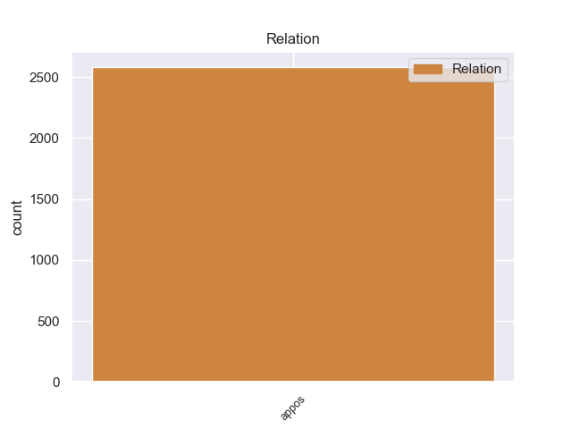
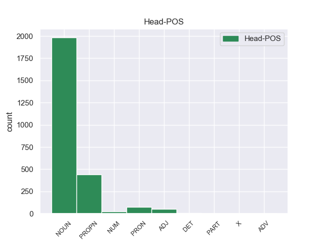
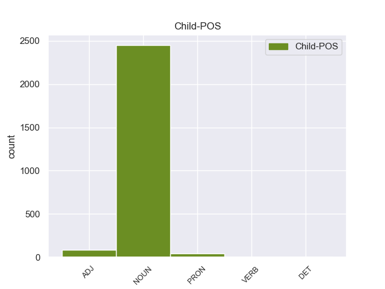

Distribution of features within this leaf



Morphosyntax Rules sorted by frequency.
- When the dependent token is the appositional modifier(appos) of the head token, and the head token is NOUN and the dependent token is NOUN, the Case needs to be Nom.
1 Это _ _ _ _ 0 _ _ _
2 был _ _ _ _ 0 _ _ _
3 гриб гриб NOUN _ Animacy=Inan|Case=Nom|Gender=Masc|Number=Sing 0 _ _ _
4 - _ _ _ _ 0 _ _ _
5 генерал _ _ _ _ 0 _ _ _
6 , _ _ _ _ 0 _ _ _
7 настоящий _ _ _ _ 0 _ _ _
8 предводитель предводитель NOUN _ Animacy=Anim|Case=Nom|Gender=Masc|Number=Sing 3 appos 3:appos _
9 грибной _ _ _ _ 0 _ _ _
10 рати _ _ _ _ 0 _ _ _
11 , _ _ _ _ 0 _ _ _
12 он _ _ _ _ 0 _ _ _
13 не _ _ _ _ 0 _ _ _
14 мог _ _ _ _ 0 _ _ _
15 расти _ _ _ _ 0 _ _ _
16 в _ _ _ _ 0 _ _ _
17 одиночку _ _ _ _ 0 _ _ _
18 , _ _ _ _ 0 _ _ _
19 и _ _ _ _ 0 _ _ _
20 надо _ _ _ _ 0 _ _ _
21 было _ _ _ _ 0 _ _ _
22 обрыскать _ _ _ _ 0 _ _ _
23 хвойное _ _ _ _ 0 _ _ _
24 одеяло _ _ _ _ 0 _ _ _
25 у _ _ _ _ 0 _ _ _
26 подножия _ _ _ _ 0 _ _ _
27 ближайших _ _ _ _ 0 _ _ _
28 елей _ _ _ _ 0 _ _ _
29 , _ _ _ _ 0 _ _ _
30 но _ _ _ _ 0 _ _ _
31 я _ _ _ _ 0 _ _ _
32 как-то _ _ _ _ 0 _ _ _
33 ленился _ _ _ _ 0 _ _ _
34 , _ _ _ _ 0 _ _ _
35 и _ _ _ _ 0 _ _ _
36 тут _ _ _ _ 0 _ _ _
37 совсем _ _ _ _ 0 _ _ _
38 отчетливо _ _ _ _ 0 _ _ _
39 , _ _ _ _ 0 _ _ _
40 слышимый _ _ _ _ 0 _ _ _
41 не _ _ _ _ 0 _ _ _
42 внутренним _ _ _ _ 0 _ _ _
43 , _ _ _ _ 0 _ _ _
44 а _ _ _ _ 0 _ _ _
45 внешним _ _ _ _ 0 _ _ _
46 слухом _ _ _ _ 0 _ _ _
47 , _ _ _ _ 0 _ _ _
48 голос _ _ _ _ 0 _ _ _
49 , _ _ _ _ 0 _ _ _
50 исполненный _ _ _ _ 0 _ _ _
51 той _ _ _ _ 0 _ _ _
52 чистой _ _ _ _ 0 _ _ _
53 нежности _ _ _ _ 0 _ _ _
54 , _ _ _ _ 0 _ _ _
55 что _ _ _ _ 0 _ _ _
56 берегла _ _ _ _ 0 _ _ _
57 меня _ _ _ _ 0 _ _ _
58 в _ _ _ _ 0 _ _ _
59 детстве _ _ _ _ 0 _ _ _
60 , _ _ _ _ 0 _ _ _
61 произнес _ _ _ _ 0 _ _ _
62 : _ _ _ _ 0 _ _ _
63 - _ _ _ _ 0 _ _ _
64 Ищи _ _ _ _ 0 _ _ _
65 , _ _ _ _ 0 _ _ _
66 мальчик _ _ _ _ 0 _ _ _
67 , _ _ _ _ 0 _ _ _
68 ты _ _ _ _ 0 _ _ _
69 нырок _ _ _ _ 0 _ _ _
70 ! _ _ _ _ 0 _ _ _
71 . _ _ _ _ 0 _ _ _
72 . _ _ _ _ 0 _ _ _
1 О _ _ _ _ 0 _ _ _
2 новом _ _ _ _ 0 _ _ _
3 направлении _ _ _ _ 0 _ _ _
4 мембранной _ _ _ _ 0 _ _ _
5 технологии _ _ _ _ 0 _ _ _
6 рассказывает _ _ _ _ 0 _ _ _
7 нашему _ _ _ _ 0 _ _ _
8 корреспонденту _ _ _ _ 0 _ _ _
9 Бруно Бруно PROPN _ Animacy=Anim|Case=Nom|Gender=Masc|Number=Sing 0 _ _ _
10 Андреевич _ _ _ _ 0 _ _ _
11 Пурин _ _ _ _ 0 _ _ _
12 , _ _ _ _ 0 _ _ _
13 президент президент NOUN _ Animacy=Anim|Case=Nom|Gender=Masc|Number=Sing 9 appos 9:appos _
14 Академии _ _ _ _ 0 _ _ _
15 наук _ _ _ _ 0 _ _ _
16 Латвийской _ _ _ _ 0 _ _ _
17 ССР _ _ _ _ 0 _ _ _
18 , _ _ _ _ 0 _ _ _
19 член _ _ _ _ 0 _ _ _
20 - _ _ _ _ 0 _ _ _
21 корреспондент _ _ _ _ 0 _ _ _
22 Академии _ _ _ _ 0 _ _ _
23 наук _ _ _ _ 0 _ _ _
24 СССР _ _ _ _ 0 _ _ _
25 . _ _ _ _ 0 _ _ _
1 Оно оно PRON _ Case=Nom|Gender=Neut|Number=Sing|Person=3 0 _ _ _
2 было _ _ _ _ 0 _ _ _
3 неправдоподобно _ _ _ _ 0 _ _ _
4 тихим _ _ _ _ 0 _ _ _
5 , _ _ _ _ 0 _ _ _
6 это _ _ _ _ 0 _ _ _
7 стадо стадо NOUN _ Animacy=Inan|Case=Nom|Gender=Neut|Number=Sing 1 appos 1:appos SpaceAfter=No
8 ; _ _ _ _ 0 _ _ _
9 коровы _ _ _ _ 0 _ _ _
10 лежали _ _ _ _ 0 _ _ _
11 , _ _ _ _ 0 _ _ _
12 словно _ _ _ _ 0 _ _ _
13 затаясь _ _ _ _ 0 _ _ _
14 , _ _ _ _ 0 _ _ _
15 чем-то _ _ _ _ 0 _ _ _
16 опасным _ _ _ _ 0 _ _ _
17 веяло _ _ _ _ 0 _ _ _
18 от _ _ _ _ 0 _ _ _
19 их _ _ _ _ 0 _ _ _
20 бесшумности _ _ _ _ 0 _ _ _
21 . _ _ _ _ 0 _ _ _
1 А _ _ _ _ 0 _ _ _
2 ответ ответ NOUN _ Animacy=Inan|Case=Nom|Gender=Masc|Number=Sing 0 _ _ _
3 - _ _ _ _ 0 _ _ _
4 вот _ _ _ _ 0 _ _ _
5 он он PRON _ Case=Nom|Gender=Masc|Number=Sing|Person=3 2 appos 2:appos SpaceAfter=No
6 : _ _ _ _ 0 _ _ _
7 все _ _ _ _ 0 _ _ _
8 прежние _ _ _ _ 0 _ _ _
9 попытки _ _ _ _ 0 _ _ _
10 реформ _ _ _ _ 0 _ _ _
11 не _ _ _ _ 0 _ _ _
12 принесли _ _ _ _ 0 _ _ _
13 должного _ _ _ _ 0 _ _ _
14 результата _ _ _ _ 0 _ _ _
15 , _ _ _ _ 0 _ _ _
16 потому _ _ _ _ 0 _ _ _
17 что _ _ _ _ 0 _ _ _
18 не _ _ _ _ 0 _ _ _
19 опирались _ _ _ _ 0 _ _ _
20 на _ _ _ _ 0 _ _ _
21 широкое _ _ _ _ 0 _ _ _
22 развертывание _ _ _ _ 0 _ _ _
23 процессов _ _ _ _ 0 _ _ _
24 демократизации _ _ _ _ 0 _ _ _
25 . _ _ _ _ 0 _ _ _
1 Слово _ _ _ _ 0 _ _ _
2 " _ _ _ _ 0 _ _ _
3 ведомственный _ _ _ _ 0 _ _ _
4 " _ _ _ _ 0 _ _ _
5 стало _ _ _ _ 0 _ _ _
6 чуть _ _ _ _ 0 _ _ _
7 ли _ _ _ _ 0 _ _ _
8 не _ _ _ _ 0 _ _ _
9 синонимом _ _ _ _ 0 _ _ _
10 слова слово NOUN _ Animacy=Inan|Case=Gen|Gender=Neut|Number=Sing 0 _ _ _
11 " _ _ _ _ 0 _ _ _
12 антиобщественный антиобщественный ADJ _ Case=Nom|Degree=Pos|Gender=Masc|Number=Sing 10 appos 10:appos SpaceAfter=No
13 " _ _ _ _ 0 _ _ _
14 . _ _ _ _ 0 _ _ _
1 90 _ _ _ _ 0 _ _ _
2 приемных _ _ _ _ 0 _ _ _
3 станций _ _ _ _ 0 _ _ _
4 " _ _ _ _ 0 _ _ _
5 Орбита _ _ _ _ 0 _ _ _
6 " _ _ _ _ 0 _ _ _
7 , _ _ _ _ 0 _ _ _
8 300 _ _ _ _ 0 _ _ _
9 станций _ _ _ _ 0 _ _ _
10 " _ _ _ _ 0 _ _ _
11 Москва _ _ _ _ 0 _ _ _
12 " _ _ _ _ 0 _ _ _
13 и _ _ _ _ 0 _ _ _
14 более _ _ _ _ 0 _ _ _
When the dependent token is the appositional modifier(appos) of the head token, and the head token is ADJ and the dependent token is ADJ, the Case needs to be Nom.
1 Однако _ _ _ _ 0 _ _ _
2 на _ _ _ _ 0 _ _ _
3 смену _ _ _ _ 0 _ _ _
4 ей _ _ _ _ 0 _ _ _
5 приходила _ _ _ _ 0 _ _ _
6 другая другой ADJ _ Case=Nom|Degree=Pos|Gender=Fem|Number=Sing 0 _ _ _
7 ( _ _ _ _ 0 _ _ _
8 официальная официальный ADJ _ Case=Nom|Degree=Pos|Gender=Fem|Number=Sing 6 appos 6:appos SpaceAfter=No
9 ) _ _ _ _ 0 _ _ _
10 - _ _ _ _ 0 _ _ _
11 конфискация _ _ _ _ 0 _ _ _
12 , _ _ _ _ 0 _ _ _
13 которой _ _ _ _ 0 _ _ _
14 легко _ _ _ _ 0 _ _ _
15 могло _ _ _ _ 0 _ _ _
16 быть _ _ _ _ 0 _ _ _
17 подвергнуто _ _ _ _ 0 _ _ _
18 имущество _ _ _ _ 0 _ _ _
19 . _ _ _ _ 0 _ _ _
When the dependent token is the appositional modifier(appos) of the head token, and the head token is ADJ and the dependent token is NOUN, the Case needs to be Nom.
1 Акционеры _ _ _ _ 0 _ _ _
2 ОАО _ _ _ _ 0 _ _ _
3 " _ _ _ _ 0 _ _ _
4 Балтика _ _ _ _ 0 _ _ _
5 - _ _ _ _ 0 _ _ _
6 Дон _ _ _ _ 0 _ _ _
7 " _ _ _ _ 0 _ _ _
8 и _ _ _ _ 0 _ _ _
9 ОАО _ _ _ _ 0 _ _ _
10 " _ _ _ _ 0 _ _ _
11 Тульское тульский ADJ _ Case=Nom|Degree=Pos|Gender=Neut|Number=Sing 0 _ _ _
12 пиво пиво NOUN _ Animacy=Inan|Case=Nom|Gender=Neut|Number=Sing 11 appos 11:appos SpaceAfter=No
13 " _ _ _ _ 0 _ _ _
14 на _ _ _ _ 0 _ _ _
15 внеочередных _ _ _ _ 0 _ _ _
16 собраниях _ _ _ _ 0 _ _ _
17 одобрили _ _ _ _ 0 _ _ _
18 присоединение _ _ _ _ 0 _ _ _
19 компаний _ _ _ _ 0 _ _ _
20 к _ _ _ _ 0 _ _ _
21 ОАО _ _ _ _ 0 _ _ _
22 " _ _ _ _ 0 _ _ _
23 Пивоваренная _ _ _ _ 0 _ _ _
24 компания _ _ _ _ 0 _ _ _
25 " _ _ _ _ 0 _ _ _
26 Балтика _ _ _ _ 0 _ _ _
27 " _ _ _ _ 0 _ _ _
28 . _ _ _ _ 0 _ _ _
When the dependent token is the appositional modifier(appos) of the head token, and the head token is PROPN and the dependent token is ADJ, the Case needs to be Nom.
1 Святой _ _ _ _ 0 _ _ _
2 равноапостольный _ _ _ _ 0 _ _ _
3 князь _ _ _ _ 0 _ _ _
4 Владимир Владимир PROPN _ Animacy=Anim|Case=Nom|Gender=Masc|Number=Sing 0 _ _ _
5 Великий великий ADJ _ Case=Nom|Degree=Pos|Gender=Masc|Number=Sing 4 appos 4:appos _
6 назначил _ _ _ _ 0 _ _ _
7 князем _ _ _ _ 0 _ _ _
8 на _ _ _ _ 0 _ _ _
9 Волынь _ _ _ _ 0 _ _ _
10 своего _ _ _ _ 0 _ _ _
11 сына _ _ _ _ 0 _ _ _
12 Всеволода _ _ _ _ 0 _ _ _
13 , _ _ _ _ 0 _ _ _
14 которому _ _ _ _ 0 _ _ _
15 подчинялась _ _ _ _ 0 _ _ _
16 не _ _ _ _ 0 _ _ _
17 только _ _ _ _ 0 _ _ _
18 Волынь _ _ _ _ 0 _ _ _
19 , _ _ _ _ 0 _ _ _
20 но _ _ _ _ 0 _ _ _
21 и _ _ _ _ 0 _ _ _
22 все _ _ _ _ 0 _ _ _
23 червенские _ _ _ _ 0 _ _ _
24 города _ _ _ _ 0 _ _ _
25 до _ _ _ _ 0 _ _ _
26 предгорий _ _ _ _ 0 _ _ _
27 Карпат _ _ _ _ 0 _ _ _
28 . _ _ _ _ 0 _ _ _
When the dependent token is the appositional modifier(appos) of the head token, and the head token is PRON and the dependent token is PRON, the Case needs to be Nom.
1 Глупая _ _ _ _ 0 _ _ _
2 женщина _ _ _ _ 0 _ _ _
3 , _ _ _ _ 0 _ _ _
4 она _ _ _ _ 0 _ _ _
5 тоже _ _ _ _ 0 _ _ _
6 бредет _ _ _ _ 0 _ _ _
7 наугад _ _ _ _ 0 _ _ _
8 , _ _ _ _ 0 _ _ _
9 вытянув _ _ _ _ 0 _ _ _
10 руки _ _ _ _ 0 _ _ _
11 , _ _ _ _ 0 _ _ _
12 обшаривая _ _ _ _ 0 _ _ _
13 выступы _ _ _ _ 0 _ _ _
14 и _ _ _ _ 0 _ _ _
15 расселины _ _ _ _ 0 _ _ _
16 , _ _ _ _ 0 _ _ _
17 спотыкаясь _ _ _ _ 0 _ _ _
18 в _ _ _ _ 0 _ _ _
19 тумане _ _ _ _ 0 _ _ _
20 , _ _ _ _ 0 _ _ _
21 она _ _ _ _ 0 _ _ _
22 вздрагивает _ _ _ _ 0 _ _ _
23 и _ _ _ _ 0 _ _ _
24 ежится _ _ _ _ 0 _ _ _
25 во _ _ _ _ 0 _ _ _
26 сне _ _ _ _ 0 _ _ _
27 , _ _ _ _ 0 _ _ _
28 она _ _ _ _ 0 _ _ _
29 тянется _ _ _ _ 0 _ _ _
30 к _ _ _ _ 0 _ _ _
31 блуждающим _ _ _ _ 0 _ _ _
32 огням _ _ _ _ 0 _ _ _
33 , _ _ _ _ 0 _ _ _
34 ловит _ _ _ _ 0 _ _ _
35 неловкими _ _ _ _ 0 _ _ _
36 пальчиками _ _ _ _ 0 _ _ _
37 отражения _ _ _ _ 0 _ _ _
38 свечей _ _ _ _ 0 _ _ _
39 , _ _ _ _ 0 _ _ _
40 хватает _ _ _ _ 0 _ _ _
41 круги _ _ _ _ 0 _ _ _
42 на _ _ _ _ 0 _ _ _
43 воде _ _ _ _ 0 _ _ _
44 , _ _ _ _ 0 _ _ _
45 бросается _ _ _ _ 0 _ _ _
46 за _ _ _ _ 0 _ _ _
47 тенью _ _ _ _ 0 _ _ _
48 дыма _ _ _ _ 0 _ _ _
49 ; _ _ _ _ 0 _ _ _
50 она _ _ _ _ 0 _ _ _
51 склоняет _ _ _ _ 0 _ _ _
52 голову _ _ _ _ 0 _ _ _
53 на _ _ _ _ 0 _ _ _
54 плечо _ _ _ _ 0 _ _ _
55 , _ _ _ _ 0 _ _ _
56 слушает _ _ _ _ 0 _ _ _
57 шуршание _ _ _ _ 0 _ _ _
58 ветра _ _ _ _ 0 _ _ _
59 и _ _ _ _ 0 _ _ _
60 пыли _ _ _ _ 0 _ _ _
61 , _ _ _ _ 0 _ _ _
62 растерянно _ _ _ _ 0 _ _ _
63 улыбается _ _ _ _ 0 _ _ _
64 , _ _ _ _ 0 _ _ _
65 озирается _ _ _ _ 0 _ _ _
66 - _ _ _ _ 0 _ _ _
67 где _ _ _ _ 0 _ _ _
68 оно оно PRON _ Case=Nom|Gender=Neut|Number=Sing|Person=3 0 _ _ _
69 , _ _ _ _ 0 _ _ _
70 то то PRON _ Animacy=Inan|Case=Nom|Gender=Neut|Number=Sing 68 appos 68:appos SpaceAfter=No
71 , _ _ _ _ 0 _ _ _
72 что _ _ _ _ 0 _ _ _
73 сейчас _ _ _ _ 0 _ _ _
74 промелькнуло _ _ _ _ 0 _ _ _
75 ? _ _ _ _ 0 _ _ _
When the dependent token is the appositional modifier(appos) of the head token, and the head token is PRON and the dependent token is ADJ, the Case needs to be Nom.
1 Даже _ _ _ _ 0 _ _ _
2 он он PRON _ Case=Nom|Gender=Masc|Number=Sing|Person=3 0 _ _ _
3 , _ _ _ _ 0 _ _ _
4 этот _ _ _ _ 0 _ _ _
5 рыжий рыжий ADJ _ Case=Nom|Degree=Pos|Gender=Masc|Number=Sing 2 appos 2:appos SpaceAfter=No
6 , _ _ _ _ 0 _ _ _
7 был _ _ _ _ 0 _ _ _
8 мне _ _ _ _ 0 _ _ _
9 интересен _ _ _ _ 0 _ _ _
10 . _ _ _ _ 0 _ _ _
When the dependent token is the appositional modifier(appos) of the head token, and the head token is ADJ and the dependent token is PRON, the Case needs to be Nom.
1 А _ _ _ _ 0 _ _ _
2 старшие старший ADJ _ Case=Nom|Degree=Pos|Number=Plur 0 _ _ _
3 , _ _ _ _ 0 _ _ _
4 ходячие _ _ _ _ 0 _ _ _
5 - _ _ _ _ 0 _ _ _
6 года _ _ _ _ 0 _ _ _
7 по _ _ _ _ 0 _ _ _
8 полтора _ _ _ _ 0 _ _ _
9 - _ _ _ _ 0 _ _ _
10 два _ _ _ _ 0 _ _ _
11 , _ _ _ _ 0 _ _ _
12 - _ _ _ _ 0 _ _ _
13 как _ _ _ _ 0 _ _ _
14 они они PRON _ Case=Nom|Number=Plur|Person=3 2 appos 2:appos _
15 жадно _ _ _ _ 0 _ _ _
16 толпились _ _ _ _ 0 _ _ _
17 вокруг _ _ _ _ 0 _ _ _
18 рояля _ _ _ _ 0 _ _ _
19 ! _ _ _ _ 0 _ _ _
When the dependent token is the appositional modifier(appos) of the head token, and the head token is X and the dependent token is NOUN, the Case needs to be Nom.
1 Мне _ _ _ _ 0 _ _ _
2 представляется _ _ _ _ 0 _ _ _
3 , _ _ _ _ 0 _ _ _
4 что _ _ _ _ 0 _ _ _
5 описанный _ _ _ _ 0 _ _ _
6 биомиметический _ _ _ _ 0 _ _ _
7 ( _ _ _ _ 0 _ _ _
8 от _ _ _ _ 0 _ _ _
9 латинских _ _ _ _ 0 _ _ _
10 слов _ _ _ _ 0 _ _ _
11 " _ _ _ _ 0 _ _ _
12 биос _ _ _ _ 0 _ _ _
13 " _ _ _ _ 0 _ _ _
14 - _ _ _ _ 0 _ _ _
15 жизнь _ _ _ _ 0 _ _ _
16 и _ _ _ _ 0 _ _ _
17 " _ _ _ _ 0 _ _ _
18 миметис миметис X _ Foreign=Yes 0 _ _ _
19 " _ _ _ _ 0 _ _ _
20 - _ _ _ _ 0 _ _ _
21 подражание подражание NOUN _ Animacy=Inan|Case=Nom|Gender=Neut|Number=Sing 18 appos 18:appos SpaceAfter=No
22 ) _ _ _ _ 0 _ _ _
23 подход _ _ _ _ 0 _ _ _
24 - _ _ _ _ 0 _ _ _
25 наиболее _ _ _ _ 0 _ _ _
26 реалистичный _ _ _ _ 0 _ _ _
27 путь _ _ _ _ 0 _ _ _
28 создания _ _ _ _ 0 _ _ _
29 наномеханических _ _ _ _ 0 _ _ _
30 устройств _ _ _ _ 0 _ _ _
31 и _ _ _ _ 0 _ _ _
32 одна _ _ _ _ 0 _ _ _
33 из _ _ _ _ 0 _ _ _
34 тех _ _ _ _ 0 _ _ _
35 областей _ _ _ _ 0 _ _ _
36 , _ _ _ _ 0 _ _ _
37 где _ _ _ _ 0 _ _ _
38 содружество _ _ _ _ 0 _ _ _
39 физиков _ _ _ _ 0 _ _ _
40 и _ _ _ _ 0 _ _ _
41 биологов _ _ _ _ 0 _ _ _
42 на _ _ _ _ 0 _ _ _
43 ниве _ _ _ _ 0 _ _ _
44 нанотехнологий _ _ _ _ 0 _ _ _
45 может _ _ _ _ 0 _ _ _
46 принести _ _ _ _ 0 _ _ _
47 ощутимые _ _ _ _ 0 _ _ _
48 результаты _ _ _ _ 0 _ _ _
49 . _ _ _ _ 0 _ _ _
When the dependent token is the appositional modifier(appos) of the head token, and the head token is DET and the dependent token is PRON, the Case needs to be Nom.
1 Так _ _ _ _ 0 _ _ _
2 вот _ _ _ _ 0 _ _ _
3 тут _ _ _ _ 0 _ _ _
4 у _ _ _ _ 0 _ _ _
5 Ореха _ _ _ _ 0 _ _ _
6 ошибка _ _ _ _ 0 _ _ _
7 - _ _ _ _ 0 _ _ _
8 нет _ _ _ _ 0 _ _ _
When the dependent token is the appositional modifier(appos) of the head token, and the head token is PROPN and the dependent token is PRON, the Case needs to be Nom.
1 Касьянов Касьянов PROPN _ Animacy=Anim|Case=Nom|Gender=Masc|Number=Sing 0 _ _ _
2 , _ _ _ _ 0 _ _ _
3 даже _ _ _ _ 0 _ _ _
4 если _ _ _ _ 0 _ _ _
5 бы _ _ _ _ 0 _ _ _
6 ему _ _ _ _ 0 _ _ _
7 дали _ _ _ _ 0 _ _ _
8 возможность _ _ _ _ 0 _ _ _
9 свободно _ _ _ _ 0 _ _ _
10 выходить _ _ _ _ 0 _ _ _
11 в _ _ _ _ 0 _ _ _
12 эфир _ _ _ _ 0 _ _ _
13 и _ _ _ _ 0 _ _ _
14 дискутировать _ _ _ _ 0 _ _ _
15 , _ _ _ _ 0 _ _ _
16 вряд _ _ _ _ 0 _ _ _
17 ли _ _ _ _ 0 _ _ _
18 бы _ _ _ _ 0 _ _ _
19 он он PRON _ Case=Nom|Gender=Masc|Number=Sing|Person=3 1 appos 1:appos _
20 набрал _ _ _ _ 0 _ _ _
21 больше _ _ _ _ 0 _ _ _
22 семи _ _ _ _ 0 _ _ _
23 процентов _ _ _ _ 0 _ _ _
24 . _ _ _ _ 0 _ _ _
When the dependent token is the appositional modifier(appos) of the head token, and the head token is PART and the dependent token is NOUN, the Case needs to be Nom.
1 Это _ _ _ _ 0 _ _ _
2 родовитый _ _ _ _ 0 _ _ _
3 французский _ _ _ _ 0 _ _ _
4 аристократ _ _ _ _ 0 _ _ _
5 граф _ _ _ _ 0 _ _ _
6 Кейлюс _ _ _ _ 0 _ _ _
7 , _ _ _ _ 0 _ _ _
8 участник _ _ _ _ 0 _ _ _
9 войны _ _ _ _ 0 _ _ _
10 за _ _ _ _ 0 _ _ _
11 испанское _ _ _ _ 0 _ _ _
12 наследство _ _ _ _ 0 _ _ _
13 , _ _ _ _ 0 _ _ _
14 чье _ _ _ _ 0 _ _ _
15 полное _ _ _ _ 0 _ _ _
16 имя _ _ _ _ 0 _ _ _
17 звучало _ _ _ _ 0 _ _ _
18 так _ _ _ _ 0 _ _ _
19 : _ _ _ _ 0 _ _ _
20 Анн _ _ _ _ 0 _ _ _
21 - _ _ _ _ 0 _ _ _
22 Клод _ _ _ _ 0 _ _ _
23 - _ _ _ _ 0 _ _ _
24 Филипп _ _ _ _ 0 _ _ _
25 де _ _ _ _ 0 _ _ _
26 Тюбьер _ _ _ _ 0 _ _ _
27 де _ _ _ _ 0 _ _ _
28 Гримор _ _ _ _ 0 _ _ _
29 де де PART _ _ 0 _ _ _
30 Пестель _ _ _ _ 0 _ _ _
31 де _ _ _ _ 0 _ _ _
32 Леви _ _ _ _ 0 _ _ _
33 граф граф NOUN _ Animacy=Anim|Case=Nom|Gender=Masc|Number=Sing 29 appos 29:appos _
34 де _ _ _ _ 0 _ _ _
35 Кейлюс _ _ _ _ 0 _ _ _
36 . _ _ _ _ 0 _ _ _
When the dependent token is the appositional modifier(appos) of the head token, and the head token is DET and the dependent token is NOUN, the Case needs to be Nom.
1 Те тот DET _ Case=Nom|Number=Plur 0 _ _ _
2 , _ _ _ _ 0 _ _ _
3 что _ _ _ _ 0 _ _ _
4 постарше _ _ _ _ 0 _ _ _
5 , _ _ _ _ 0 _ _ _
6 ползунки ползунок NOUN _ Animacy=Anim|Case=Nom|Gender=Masc|Number=Plur 1 appos 1:appos SpaceAfter=No
7 , _ _ _ _ 0 _ _ _
8 понимали _ _ _ _ 0 _ _ _
9 еще _ _ _ _ 0 _ _ _
10 больше _ _ _ _ 0 _ _ _
11 . _ _ _ _ 0 _ _ _
non-conforming Examples:
1 Перед _ _ _ _ 0 _ _ _
2 ним _ _ _ _ 0 _ _ _
3 лежала _ _ _ _ 0 _ _ _
4 копия _ _ _ _ 0 _ _ _
5 жалобы _ _ _ _ 0 _ _ _
6 жителей _ _ _ _ 0 _ _ _
7 села село NOUN _ Animacy=Inan|Case=Gen|Gender=Neut|Number=Sing 0 _ _ _
8 Веселого веселый ADJ _ Case=Gen|Degree=Pos|Gender=Neut|Number=Sing 7 appos 7:appos _
9 на _ _ _ _ 0 _ _ _
10 плохую _ _ _ _ 0 _ _ _
11 работу _ _ _ _ 0 _ _ _
12 трансляционной _ _ _ _ 0 _ _ _
13 сети _ _ _ _ 0 _ _ _
14 . _ _ _ _ 0 _ _ _
1 В _ _ _ _ 0 _ _ _
2 анкете _ _ _ _ 0 _ _ _
3 было _ _ _ _ 0 _ _ _
4 сказано _ _ _ _ 0 _ _ _
5 , _ _ _ _ 0 _ _ _
6 что _ _ _ _ 0 _ _ _
7 Ефимова _ _ _ _ 0 _ _ _
8 , _ _ _ _ 0 _ _ _
9 Евгения _ _ _ _ 0 _ _ _
10 Васильевна _ _ _ _ 0 _ _ _
11 , _ _ _ _ 0 _ _ _
12 женского _ _ _ _ 0 _ _ _
13 пола _ _ _ _ 0 _ _ _
14 , _ _ _ _ 0 _ _ _
15 русская _ _ _ _ 0 _ _ _
16 , _ _ _ _ 0 _ _ _
17 родилась _ _ _ _ 0 _ _ _
18 в _ _ _ _ 0 _ _ _
19 1922 _ _ _ _ 0 _ _ _
20 году _ _ _ _ 0 _ _ _
21 , _ _ _ _ 0 _ _ _
22 в _ _ _ _ 0 _ _ _
23 семье _ _ _ _ 0 _ _ _
24 рабочего _ _ _ _ 0 _ _ _
25 , _ _ _ _ 0 _ _ _
26 в _ _ _ _ 0 _ _ _
27 1940 _ _ _ _ 0 _ _ _
28 году _ _ _ _ 0 _ _ _
29 поступила _ _ _ _ 0 _ _ _
30 в _ _ _ _ 0 _ _ _
31 Ленинградский _ _ _ _ 0 _ _ _
32 институт _ _ _ _ 0 _ _ _
33 , _ _ _ _ 0 _ _ _
34 окончила _ _ _ _ 0 _ _ _
35 его _ _ _ _ 0 _ _ _
36 с _ _ _ _ 0 _ _ _
37 отличием _ _ _ _ 0 _ _ _
38 и _ _ _ _ 0 _ _ _
39 получила _ _ _ _ 0 _ _ _
40 квалификацию _ _ _ _ 0 _ _ _
41 инженера инженер NOUN _ Animacy=Anim|Case=Gen|Gender=Masc|Number=Sing 0 _ _ _
42 - _ _ _ _ 0 _ _ _
43 электрика электрик NOUN _ Animacy=Anim|Case=Gen|Gender=Masc|Number=Sing 41 appos 41:appos _
44 по _ _ _ _ 0 _ _ _
45 радиосвязи _ _ _ _ 0 _ _ _
46 . _ _ _ _ 0 _ _ _
1 - _ _ _ _ 0 _ _ _
2 В _ _ _ _ 0 _ _ _
3 селе село NOUN _ Animacy=Inan|Case=Loc|Gender=Neut|Number=Sing 0 _ _ _
4 Веселом веселый ADJ _ Case=Loc|Degree=Pos|Gender=Neut|Number=Sing 3 appos 3:appos SpaceAfter=No
5 . _ _ _ _ 0 _ _ _
1 Кроме _ _ _ _ 0 _ _ _
2 села село NOUN _ Animacy=Inan|Case=Gen|Gender=Neut|Number=Sing 0 _ _ _
3 Веселого веселый ADJ _ Case=Gen|Degree=Pos|Gender=Neut|Number=Sing 2 appos 2:appos SpaceAfter=No
4 , _ _ _ _ 0 _ _ _
5 ничего _ _ _ _ 0 _ _ _
6 нет _ _ _ _ 0 _ _ _
7 , _ _ _ _ 0 _ _ _
8 - _ _ _ _ 0 _ _ _
9 тактично _ _ _ _ 0 _ _ _
10 не _ _ _ _ 0 _ _ _
11 обращая _ _ _ _ 0 _ _ _
12 внимания _ _ _ _ 0 _ _ _
13 на _ _ _ _ 0 _ _ _
14 ее _ _ _ _ 0 _ _ _
15 тон _ _ _ _ 0 _ _ _
16 , _ _ _ _ 0 _ _ _
17 ответил _ _ _ _ 0 _ _ _
18 начальник _ _ _ _ 0 _ _ _
19 . _ _ _ _ 0 _ _ _
1 Кстати _ _ _ _ 0 _ _ _
2 , _ _ _ _ 0 _ _ _
3 до _ _ _ _ 0 _ _ _
4 села село NOUN _ Animacy=Inan|Case=Gen|Gender=Neut|Number=Sing 0 _ _ _
5 Веселого веселый ADJ _ Case=Gen|Degree=Pos|Gender=Neut|Number=Sing 4 appos 4:appos _
6 не _ _ _ _ 0 _ _ _
7 сто _ _ _ _ 0 _ _ _
8 , _ _ _ _ 0 _ _ _
9 а _ _ _ _ 0 _ _ _
10 семьдесят _ _ _ _ 0 _ _ _
11 два _ _ _ _ 0 _ _ _
12 километра _ _ _ _ 0 _ _ _
13 . _ _ _ _ 0 _ _ _